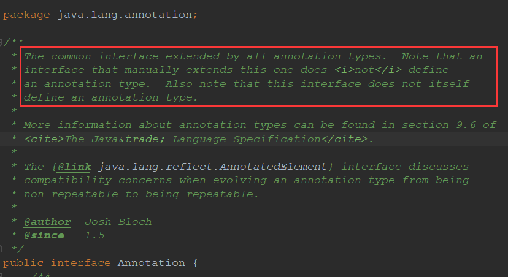

Java自定义注解
1|0前言
随着springboot的流行，以前基于XML的spring配置用的越来越少，JavaConfig形式使用的越来越多，类似于:
@Configuration
public class AppConfig {
@Bean(name="helloBean")
public HelloWorld helloWorld() {
return new HelloWorldImpl();
}
}可以看出更多的是基于注解(Annotation)实现的，包括springboot的入口类**Application。
@Configuration
@ComponentScan("com.alibaba.trade")
@EnableAutoConfiguration//(exclude = {PageHelperAutoConfiguration.class})
@ServletComponentScan
@EnableTransactionManagement
@EnableDiscoveryClient
@EnableWebMvc
@MapperScan("com.alibaba.trade.shared.mapper")
public class TradeApplication extends SpringBootServletInitializer {
public static void main(String[] args) {
SpringApplication.run(TradeApplication.class, args);
}
}Java注解不仅让我们减少了项目中XML文件，方便了维护，同时也使我们代码更简洁。那么项目中我们如何阅读注解以及如何创造自己的注解呢？
2|0注解说明
Java注解又称Java标注，是Java语言5.0版本开始支持加入源代码的特殊语法元数据。为我们在代码中添加信息提供了一种形式化的方法，使我们可以在稍后某个时刻非常方便的使用这些数据。
Java语言中的类、方法、变量、参数和包等都可以被标注。和Javadoc不同，Java标注可以通过反射获取注解内容。在编译器生成类文件时，注解可以被嵌入到字节码中。Java虚拟机可以保留注解内容，在运行时可以获取到注解内容。
2|1内置注解
Java 定义了一套注解，共有 7 个，3 个在 java.lang 中，剩下 4 个在 java.lang.annotation 中。
1、作用在代码的注解是
@Override- 检查该方法是否是重写方法。如果发现其父类，或者是引用的接口中并没有该方法时，会报编译错误。@Deprecated- 标记过时方法。如果使用该方法，会报编译警告。@SuppressWarnings- 指示编译器去忽略注解中声明的警告。
2、作用在其他注解的注解(或者说元注解)是:
@Retention- 标识这个注解怎么保存，是只在代码中，还是编入class文件中，或者是在运行时可以通过反射访问。@Documented- 标记这些注解是否包含在用户文档中。@Target- 标记这个注解应该是哪种 Java 成员。@Inherited- 标记这个注解是继承于哪个注解类(默认 注解并没有继承于任何子类)
3、从 Java 7 开始，额外添加了 3 个注解:
@SafeVarargs- Java 7 开始支持，忽略任何使用参数为泛型变量的方法或构造函数调用产生的警告。@FunctionalInterface- Java 8 开始支持，标识一个匿名函数或函数式接口。@Repeatable- Java 8 开始支持，标识某注解可以在同一个声明上使用多次。
2|2元注解
1、@Retention
@Retention annotation指定标记注释的存储方式：
- RetentionPolicy.SOURCE - 标记的注释仅保留在源级别中，并由编译器忽略。
- RetentionPolicy.CLASS - 标记的注释在编译时由编译器保留，但Java虚拟机（JVM）会忽略。
- RetentionPolicy.RUNTIME - 标记的注释由JVM保留，因此运行时环境可以使用它。
2、@Documented
@Documented 注释表明，无论何时使用指定的注释，都应使用Javadoc工具记录这些元素。（默认情况下，注释不包含在Javadoc中。）有关更多信息，请参阅 Javadoc工具页面。
3、@Target
@Target 注释标记另一个注释，以限制可以应用注释的Java元素类型。目标注释指定以下元素类型之一作为其值
- ElementType.TYPE 可以应用于类的任何元素。
- ElementType.FIELD 可以应用于字段或属性。
- ElementType.METHOD 可以应用于方法级注释。
- ElementType.PARAMETER 可以应用于方法的参数。
- ElementType.CONSTRUCTOR 可以应用于构造函数。
- ElementType.LOCAL_VARIABLE 可以应用于局部变量。
- ElementType.ANNOTATION_TYPE 可以应用于注释类型。
- ElementType.PACKAGE 可以应用于包声明。
- ElementType.TYPE_PARAMETER
- ElementType.TYPE_USE
4、@Inherited
@Inherited 注释表明注释类型可以从超类继承。当用户查询注释类型并且该类没有此类型的注释时，将查询类的超类以获取注释类型（默认情况下不是这样）。此注释仅适用于类声明。
5、@Repeatable
Repeatable Java SE 8中引入的，@Repeatable注释表明标记的注释可以多次应用于相同的声明或类型使用(即可以重复在同一个类、方法、属性等上使用)。
3|0自定义注解
Java中自定义注解和创建一个接口相似，自定义注解的格式是以@interface为标志的。
@Documented
@Retention(RetentionPolicy.RUNTIME)
@Target({ElementType.TYPE})
public @interface SPI {
/**
* default extension name
*/
String value() default "";
}我们知道java.lang.annotation包中有一个Annotation的接口，它是所有注解类型扩展的公共接口。那我们是否可以直接通过实现该接口来实现自定义注解呢？
import java.lang.annotation.Annotation;
public class MyAnnotation implements Annotation {
@Override
public Class<? extends Annotation> annotationType() {
return null;
}
}发现Annotation接口中只有一个annotationType的方法，而且通过源码的注释我们可以发现答案是不能。

汉译即为：Annotaion被所有注解类型继承，但是要注意：手动扩展继承此接口的接口不会定义注解类型。另请注意，此接口本身不定义注解类型。
4|0使用场景
自定义注解的使用场景很多，我们在造轮子写框架的过程经常会使用到，例如我最近就遇到了一个业务场景：像一些编辑业务信息的接口，产品要求信息编辑后的新旧值对比，对比的业务功能，我们的实现方式是拿到前端填写的Form表单(新值)和数据库中查询出来的Dto(旧值)通过反射技术获取到相同属性字段名，再比较属性值就可以得出新旧值。得到值之后我们也知道该字段的Dto中的字段名，但是如何将比较得到的新旧值字段的中文名返回给前端呢？例如：
public class Stedent {
private String name;
private int age;
private String sex;
//省略setter,getter
}比较后我们的结果是 name : "xiaoming "-> "daming"，age : 24 -> 26。但是我们不能直接将name和age返回给前端，他们需要的格式是：姓名: "xiaoming "-> "daming"，年龄 : 24 -> 26。这时候就可以考虑自定义一个注解@FieldName,
@Deprecated
@Documented
@Retention(RetentionPolicy.RUNTIME)
@Target(ElementType.FIELD)
public @interface FieldName {
String value() default "";
}然后将该注解加在属性字段上面
public class Student {
@FieldName(value = "姓名")
private String name;
@FieldName(value = "年龄")
private int age;
@FieldName(value = "性别")
private String sex;
//省略setter,getter
}之后就可以通过反射获取该字段中文名
// 如果 oldField 属性值与 newField 属性值的内容不相同
if (!isEmpty(newValue)) {
Map<String, Object> map = new HashMap<>();
String newFieldName = newField.getName();
//在这里获取注解的信息
if (newField.isAnnotationPresent(FieldName.class)) {
FieldName fieldNameAnno = newField.getAnnotation(FieldName.class);
newFieldName = fieldNameAnno.name();
}
map.put(FIELD_NAME, newFieldName);
map.put(OLD_VALUE, oldValue);
map.put(NEW_VALUE, newValue);
list.add(map);
}__EOF__
作 者：JaJian`博кē
出 处：https://www.cnblogs.com/jajian/p/9695055.html
关于博主：沪漂一员，互联网架构方向，如有问题探讨可以直接私信我，亦可下方留言。
版权声明：本博客的所有原创文章均会同步更新到我的公众号【小菜亦牛】上，喜欢的可以左边扫码关注。码字辛苦，尊重原创。
声援博主：如果您觉得文章对您有帮助，可以点击文章右下角【推荐】一下。您的鼓励是博主的最大动力！


{kind=link}